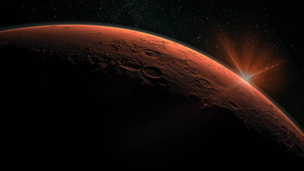

Trending Space Topics
Weekly Updates on Trending Space Topics and Questions

Why Mars?
- 1.Evolution and Geology
- -Mars provides a unique opportunity to study planetary evolution and geology. Its surface features, including volcanoes, valleys, and polar ice caps, offer insights into past geological processes that may parallel or contrast with Earth's history.
- -By studying Mars' geology, scientists can better understand the evolution of terrestrial planets and the conditions necessary for life to emerge and thrive.
- 2.Search for Extant or Extinct Life
- -Mars holds potential clues to the existence of life beyond Earth. Exploration missions aim to investigate areas where liquid water may have existed or still exists, as water is a fundamental requirement for life as we know it.
- -Discovering evidence of past or present life on Mars would have profound implications for our understanding of the origins of life in the universe and the potential for life on other planets.
- 3.Advances in Space Exploration Technology
- -Developing the technology required for Mars missions pushes the boundaries of space exploration. Innovations in propulsion, life support systems, and robotics are essential for safely transporting humans to Mars and supporting their activities on the planet's surface.
- -The challenges posed by Mars missions drive technological advancements that have broader applications in space exploration and terrestrial industries.

Information Updates: Weekly Variability